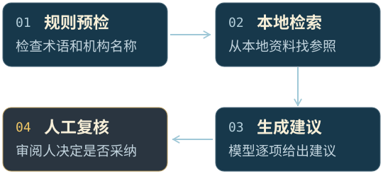

佛山直营 · 门店总经理 · 2023 至 2024
佛山直营门店经营改善
门店在亏损，光盯销量找不到原因。
我与财务一起拆解损益，调整销售和售后的分工，按历史数据和订单配库存。
亏损逐月收窄。2024 年 7 月接近盈亏平衡，未实现盈利。

2024 年 3 月实销目标达成
当月实销 17 台
- 月度目标
- 100%
- 实际达成
- 117%
经营与 AI
我管过门店，也亲手做过 AI 工具。这里挑五件事，讲清我做了什么，结果到了哪一步。
佛山直营 · 门店总经理 · 2023 至 2024
门店在亏损，光盯销量找不到原因。
我与财务一起拆解损益，调整销售和售后的分工，按历史数据和订单配库存。
亏损逐月收窄。2024 年 7 月接近盈亏平衡，未实现盈利。
当月实销 17 台
个人原型 · 2026
一份敏感报告，怎么留在本机校对？
我用 Python 和 Flask 串起规则预检、本地检索和模型推理。先找依据，再逐项给建议。
完全离线，内置 7 条校验规则。是否采纳建议，由审阅人决定。
看校对流程和人工复核 →

应用人工智能硕士研究 · 2025 至 2026
一句话既能夸空间，也能嫌续航。
我把 2,226 条原始评论筛成 859 条标注记录和 427 行训练数据，训练模型分别识别评价对象和态度，再比较不同品牌的用户感知。
看数据和实验怎么做 →
衡量模型识别评价片段的表现
邢台经销商 · 2020
我和门店一起选点、协调双方投入，逐项跟进到店和成交。一家店的实销目标完成率，三个月内从大区末端进入前三。
总部经营支持 · 2021
我用既有 CRM 建起日报和周报，把经营异常单独列出来跟踪，供总部调整销售计划和复盘。